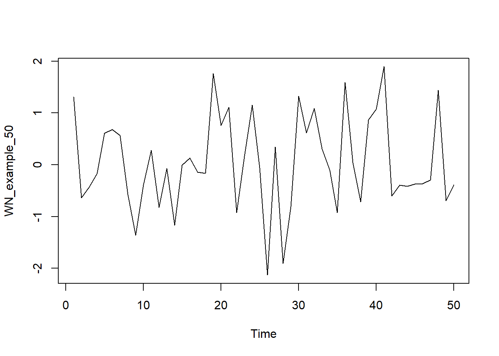
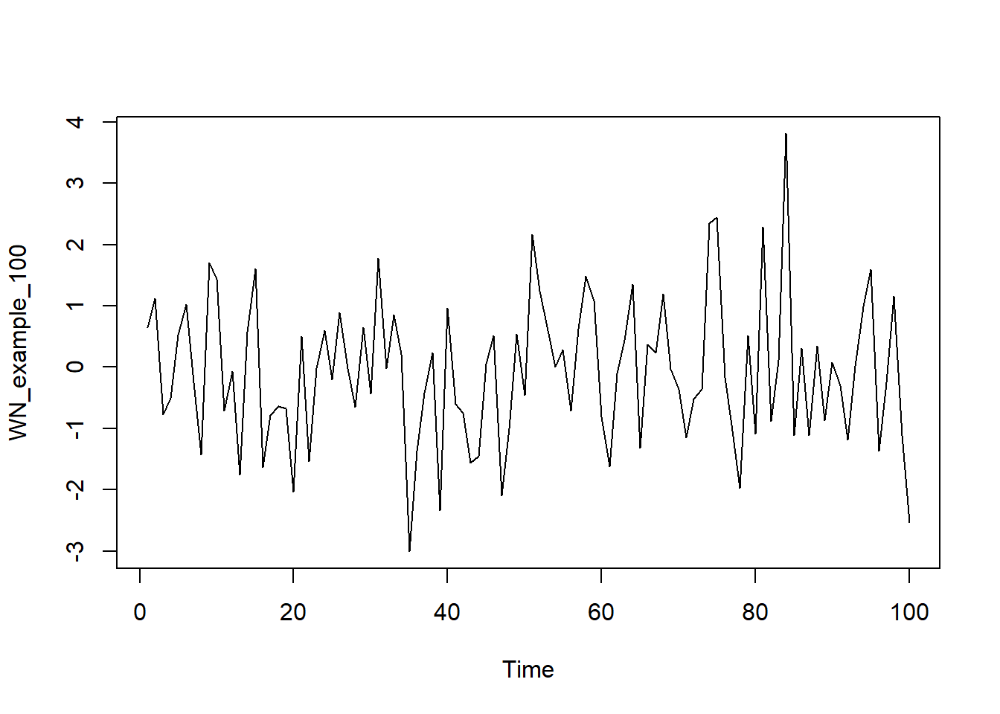
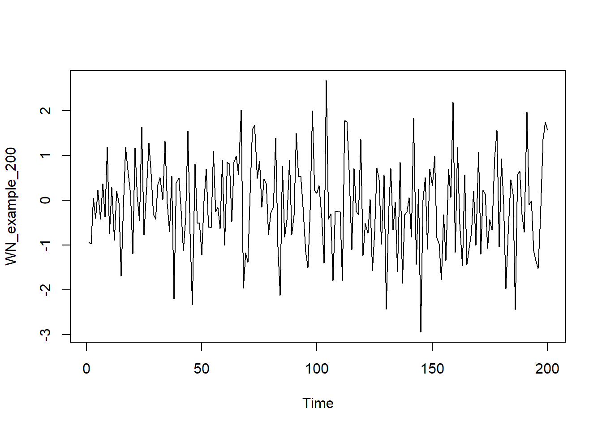
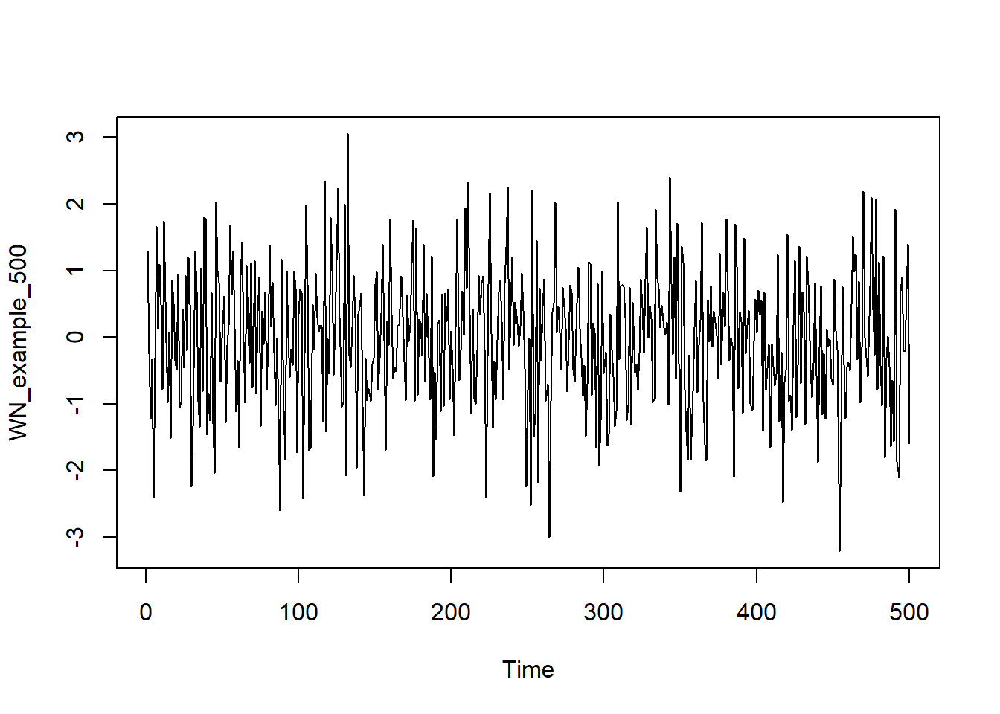
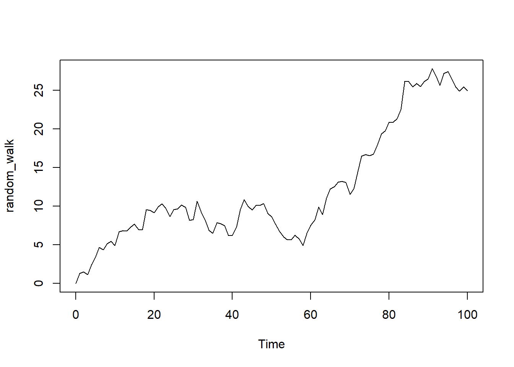

2 Chapter 1 Lab
Using R to dive in the building blocks of time series models. These building blocks include White Noise (WN), Random Walk (RW), Correlation analysis and ACF/PACF graphs, Autoregressive model (AR), and Moving Average (MA).
First thing to note is that sampling frequency tend to be not exact. If the data was recorded daily or hourly, that is exact sampling frequency. But if data is recorded monthly or yearly, it is not since months differ in number of days.
Second thing to know is detrending. Detrending is necessary to remove variability resulted from “trend” over time (oftentimes using diff() or fitting a linear regression model). Think of this as standardized for analysis. Sometimes the data needs log transformation before detrending.
2.1 White Noise (WN)
Introduce the simulation function:
library(gridExtra)
WN_example_50 <- arima.sim(model = list(order = c(0,0,0)), n = 50)
WN_example_100 <- arima.sim(model = list(order = c(0,0,0)), n = 100)
WN_example_200 <- arima.sim(model = list(order = c(0,0,0)), n = 200)
WN_example_500 <- arima.sim(model = list(order = c(0,0,0)), n = 500)
ts.plot(WN_example_50)
par(mfrow = c(3,1))ts.plot(WN_example_100)
ts.plot(WN_example_200)
ts.plot(WN_example_500)
# Plot your simulated data
# plot.ts(cbind(WN_example_50, WN_example_100, WN_example_200, WN_example_500))Above are white noise with various sample sizes. The c(0,0,0) parameter in arima() function specifies the WN model as it leaves only the independent error term \(X_t=\epsilon_t\)
Note that WN model has no pattern or trend. Named after white light in physics which display similar characteristics.
2.2 Random Walk (RW)
\[ X_T = X_{t-1} +Noise_t\] with \(Noise_t = Z_t (White noise)\)
Think of White Noise but with trend. The value of the next period depends on the value of the previous with a random level of noise.
random_walk <- arima.sim(model = list(order = c(0, 1, 0)), n = 100)
plot(random_walk)
Parameters 0,1,0 specifies Random Walk. Note that at \(t=1\), \(X_{t-1}=0\), meaning that the first data point in a random walk series is purely random error and the data points at higher time \(t\) is the previous value plus an independent error value of mean 0 and variance \(\hat \sigma^2=1\). Note that the plot would also be different every time it’s being regenerated due to its random nature.
2.3 Stationary
Stationary is preferable since its behavior can be modeled with fewer parameter (which we will get into in ARIMA).
2.3.1 Examples: CPI Data
library(quantmod)
getSymbols("CPIAUCSL", auto.assign = TRUE, src = "FRED")## [1] "CPIAUCSL"# Here I imported the CPI data from the FRED database. CPI is nonstationary, its difference (which is inflation rate) is nonstationary, but inflation's difference is stationary
plot(CPIAUCSL) CPI is nonstationary, its first order difference (which is inflation rate) is also nonstationary (mean not constant):
CPI is nonstationary, its first order difference (which is inflation rate) is also nonstationary (mean not constant):
plot(diff(CPIAUCSL))Inflation’s difference (second order differencing) is stationary with variance increases over time
plot(diff(diff(CPIAUCSL)))We will go in more detail on building a model and fitting it to the second order difference of CPI data in Chapter 6 Lab section.
2.4 ACF to Time Series Plot

Plot 1 matches with B: Trend results in positive correlation in ealry lags with some cyclicity seen in later lags.
Plot 2 matches with A: No trend results in both positive and negative correlation.
Plot 3 matches with D: Obvious trend results in high positive correlation in early lags. Plot 3 is also seasonal, which can be seen in the pump of correlation at the cycle length of lag.
Plot 4 matches with C: similar to 2 but correlation aren’t as strong
Notes: Both upward and downward trend result in positive correlation in early lags (if there is more positive correlation in later lags, the trend is stronger)